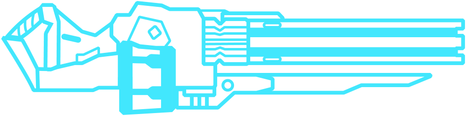
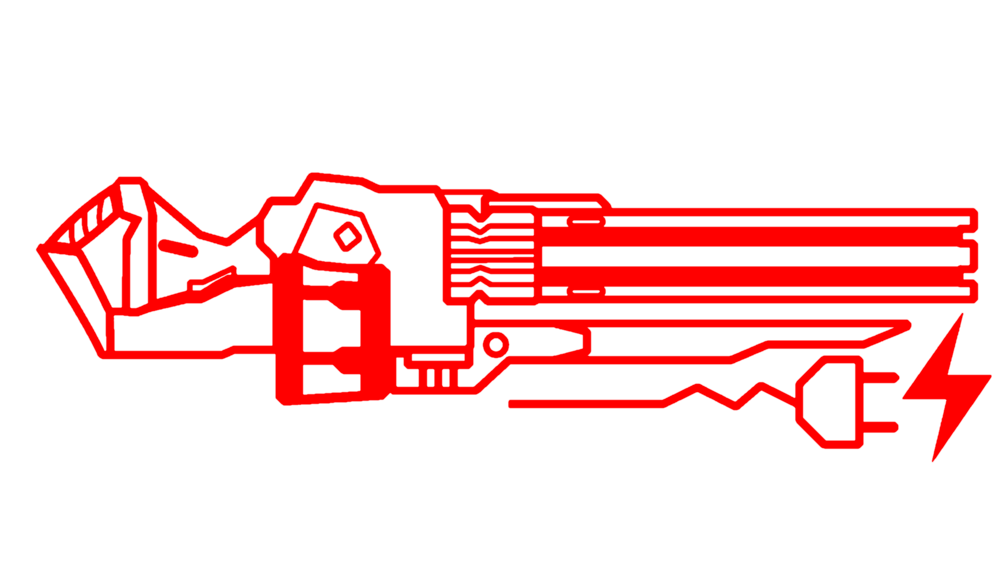

Metralhadoras de Pregos
A Metralhadora de Pregos Atratora é a variante azul da Metralhadora, obtida na camada do Limbo. Manter a tecla de disparo primário pressionada fará com que a Metralhadora Atratora comece a disparar pregos em alta velocidade, o disparo secundário lança um ímã que atrai os pregos disparados, criando armadilhas que explodem em alguns segundos.
A Metralhadora de Pregos à Queima Roupa é a variante verde da Metralhadora, que pode ser adquirida por 25.000P após a obtenção da Atratora. Manter o disparo primário pressionado fará com que a metralhadora comece a disparar pregos em alta velocidade. O disparo secundário, quando o medidor de superaquecimento estiver carregado fará com que pregos ardentes sejam disparados em uma explosão de fogo rápido, usando uma das cargas da Metralhadora Superaquecida. Funciona melhor à queima roupa.
A Metralhadora de Pregos de Ligação Direta é a variante vermelha da Metralhadora, que pode ser adquirida por 35,000P após a obtenção da Atratora. Pressione o disparo secundário para prender um cabo que carrega lentamente um choque elétrico poderoso. Os cabos conectados persistem ao trocar de arma.
